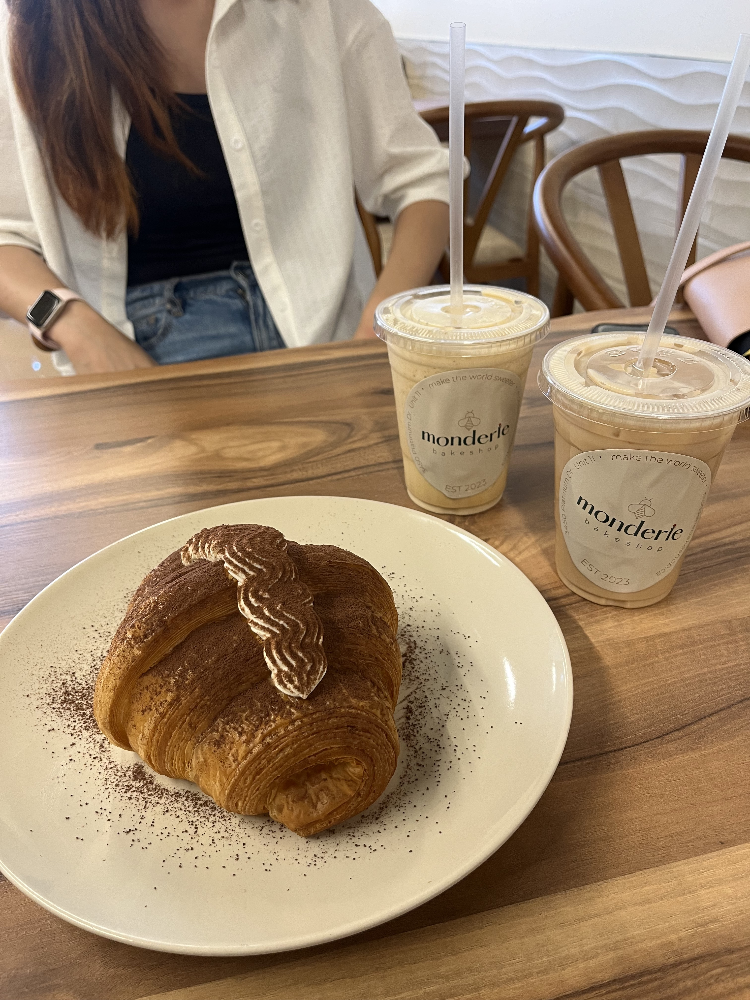
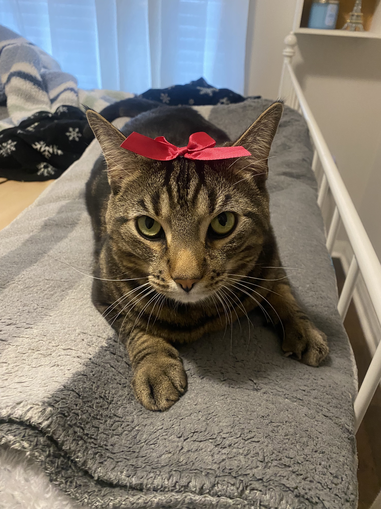

This page demonstrates accessible media elements with captions and controls.
Accessible Video Content
Video description: "The Gallopin' Gaucho," a 1928 silent animated film starring Mickey Mouse.
Source: Disney, W. (1928). The Gallopin' Gaucho [Video]. Archive.org.
Retrieved from https://archive.org/details/TheGallopinGaucho
This video is a historical animation from the early days of Disney, showcasing one of Mickey Mouse's earliest appearances.
Image Gallery

Photo taken on 2024-08-01 in Mississauga, Canada

Photo taken on 2024-01-07 in My bedroomPhoto taken on 2024-06-26 in London, UK